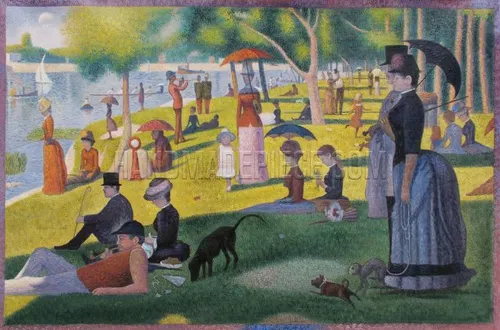

A Sunday Afternoon on the Island of La Grande Jatte
Created: 1884–1886
Georges Seurat spent two years painting this massive canvas using pointillism, a technique he pioneered where the entire image is built from thousands of tiny, individual dots of pure color rather than blended brushstrokes. Up close it looks like abstract static, but stepping back, the human eye blends the dots into smooth color and form, an idea rooted in emerging 19th-century color science. The painting shows Parisians relaxing along the Seine, and its rigid, almost frozen figures have made it one of the most studied and parodied compositions in art history.
Type: Post‑Impressionist / Pointillist Painting